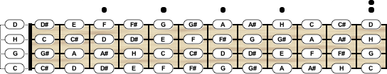
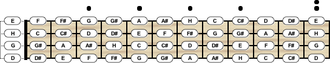
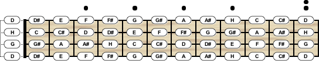
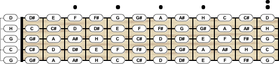
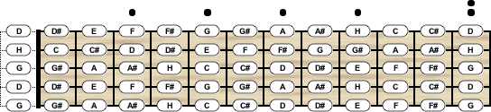

Das All-in-One Software Tool rund um Grifftabellen, Akkorde und Skalen
Banjo-Stimmungen
Im Folgenden sind sämtliche Banjo-Stimmungen aufgelistet, welche beim Chord Scale Generator
bereits mitgeliefert werden. Die hervorgehobenen Banjo-Stimmungen stehen dir dabei standardmäßig zur Verfügung.
Alle anderen Stimmungen kannst du der Liste der Instrumente über die Import-Funktion nachträglich hinzufügen.
4-Saiten Banjo
Bezeichnung
Saiten
Stimmung
C
4
c - g - h - d'
Chicago
4
d - g - h - e'
Irish Tenor
4
G - d - a - e'
Open G
4
d - g - h - d'
Tenor
4
c - g - d' - a'

4-Saiten Banjo-Stimmung C

4-Saiten Banjo-Stimmung Chicago

4-Saiten Banjo-Stimmung Open G
5-Saiten Banjo
Bezeichnung
Saiten
Stimmung
C
5
g' - c - g - h - d'
Double C
5
g' - c - g - c' - d'
Oldtime D
5
a' - d - a - d' - e'
Open A
5
a' - e - a - c'# - e'
Open D
5
f'# - d - f# - a - d'
Open G
5
g' - d - g - h - d'
Sawmill
5
g' - d - g - c' - d'

5-Saiten Banjo-Stimmung C

5-Saiten Banjo-Stimmung Open G